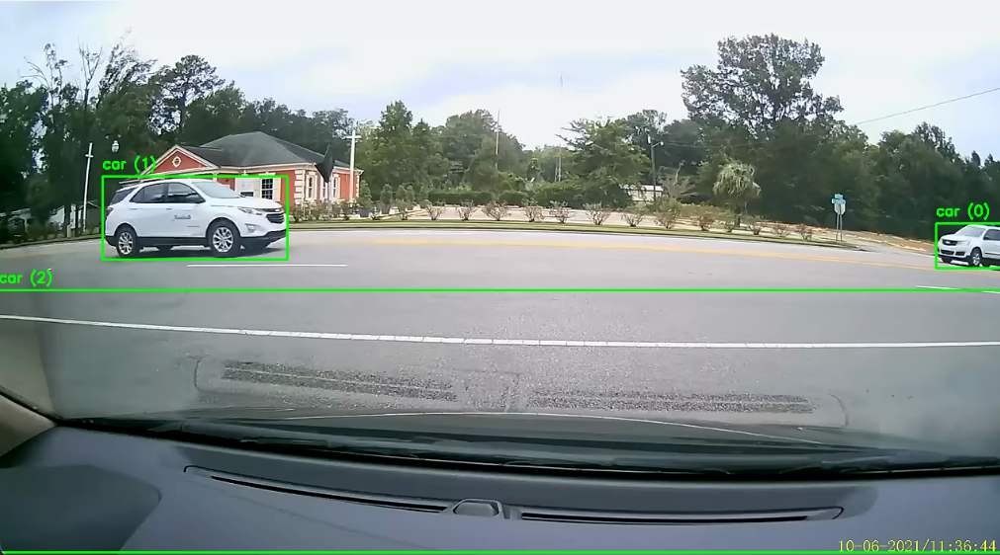
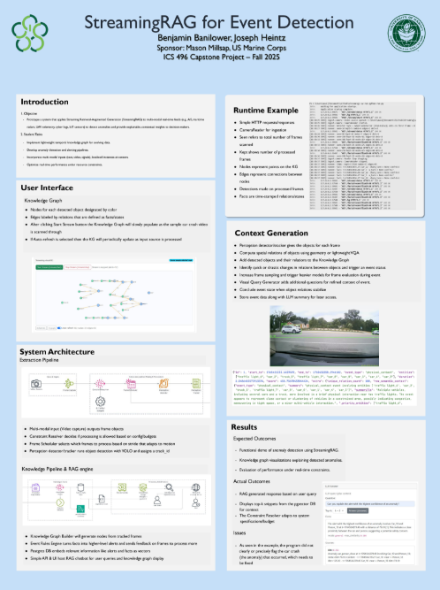

StreamingRAG is framed as a single end-to-end system: real-time anomaly detection coupled with a built-in RAG layer for grounded interpretation. In practice, the SRAG-V2 pipeline concepts (stream ingestion, frame scheduling, inference routing, temporal context updates, and knowledge-layer feedback) are treated as part of the StreamingRAG implementation direction and map to the streaming-oriented modules.
At the current milestone level, the strongest demonstrated outcome was detecting a car crash in sample video input while preserving the retrieval-grounded response flow.
Source code repositories:
The project includes the following core capabilities:
mode and max_similarity to indicate retrieval confidence.StreamingRAG demonstrates a practical combined architecture rather than two disconnected efforts. It integrates computer-vision signals, temporal reasoning, and retrieval-grounded generation into one iterative pipeline, with car-crash detection in sample footage as a concrete progress milestone.
